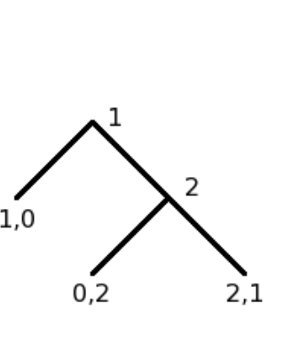

"An “Ethical” Game-Theoretic Solution Concept for
Two-Player Perfect-Information Games" (Letchford, Conitzer, Jain 2008)

"Moral Decision Making Frameworks for Artificial Intelligence" (Conitzer et al 2017)